tmp — feb25#
Motivation: scratch notebook
Show code cell source
# HIDE CODE
import os, sys
from IPython.display import display
# tmp & extras dir
git_dir = os.path.join(os.environ['HOME'], 'Dropbox/git')
extras_dir = os.path.join(git_dir, 'jb-progress-25/_extras')
fig_base_dir = os.path.join(git_dir, 'jb-progress-25/figs')
tmp_dir = os.path.join(git_dir, 'jb-progress-25/tmp')
# GitHub
sys.path.insert(0, os.path.join(git_dir, '_IterativeVAE'))
from figures.analysis import plot_convergence
from figures.imgs import plot_weights
from figures.fighelper import *
from main.train import *
# warnings, tqdm, & style
warnings.filterwarnings('ignore', category=DeprecationWarning)
warnings.filterwarnings('ignore', category=FutureWarning)
warnings.filterwarnings('ignore', category=UserWarning)
from rich.jupyter import print
%matplotlib inline
set_style()
from main.distributions import Poisson
device_idx = 0
device = f'cuda:{device_idx}'
print(f"device: {device} ——— host: {os.uname().nodename}")
device: cuda:0 ——— host: chewie
cm = 'non-whitened'
model_name = 'gaussian_relu_vH16_t-16_z-[512]_cl-5,5_<grad|lin>'
fit_name = 'b200-ep300-lr(0.002)_beta(16:0.1)_gr(500)_(2025_02_24,21:34)'
tr, meta = load_model(f"{model_name}/{cm}_{fit_name}", device)
u0 = tonp(tr.model.layer.u_init[0].squeeze())
u1 = tonp(tr.model.layer.u_init[1].squeeze())
tr.model.show(order=np.argsort(u1), method='abs-max', cmap='Greys');
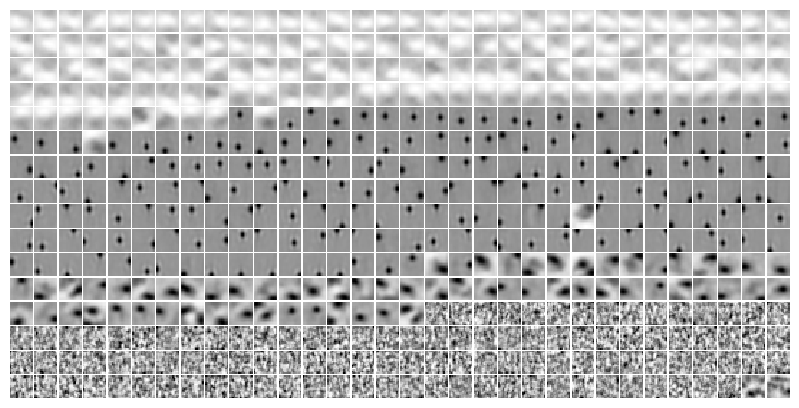
w = tr.model.layer.get_weight().T
absmax = torch.max(w.abs(), dim=1, keepdims=True).values
# absmax = w.abs().max()
w_rescaled = 0.5 * (w / absmax + 1)
w_rescaled = w_rescaled.reshape(-1, 16, 16)
w_rescaled.shape
torch.Size([512, 16, 16])
histplot(w_rescaled.ravel());
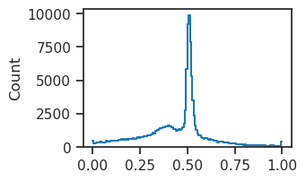
plot_weights(
w=w_rescaled[np.argsort(u1)],
method='none',
vmin=0,
vmax=1,
cmap='Greys',
);
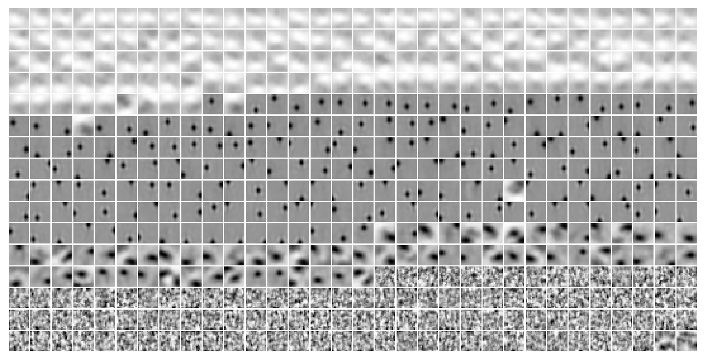
sns.color_palette('Greys', as_cmap=True)
Greys

under
bad
over
histplot(w[np.argsort(u1)][0].ravel());
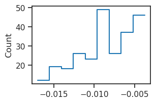
histplot(w_rescaled[np.argsort(u1)][0].ravel());
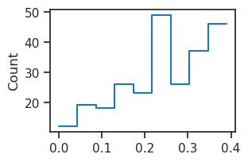
def rescale_weights(weights, axis=1):
"""
Rescale weights so that 0 maps to 0.5 and the range [-max, max] is mapped to [0, 1].
weights : np.ndarray of shape (K, M) (or any shape)
axis : axis along which to compute the maximum absolute value (default: 1)
"""
w = tonp(weights)
# Compute maximum absolute value along the specified axis
max_abs = np.max(np.abs(w), axis=axis, keepdims=True)
# Avoid division by zero: if max_abs is zero, set it to 1 so that weights remain zero.
max_abs[max_abs == 0] = 1
# Apply the rescaling transformation
w_rescaled = 0.5 * (w / max_abs + 1)
return w_rescaled
w = tr.model.layer.get_weight().T
w_rescaled = rescale_weights(w)
w_rescaled = w_rescaled.reshape(-1, 16, 16)
plot_weights(
w=w_rescaled[np.argsort(u1)],
method='none',
vmin=0,
vmax=1,
cmap='Greys',
);
from main.distributions import softclamp_sym
x = torch.linspace(-20, 20, 1000)
c = 5
x_clamped = softclamp_sym(x, c)
sigma = torch.exp(x_clamped)
plot(sigma)
[<matplotlib.lines.Line2D at 0x7f0e2da26590>]
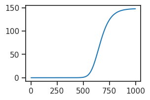
np.exp(-4.6), np.exp(4.6)
(0.010051835744633586, 99.48431564193378)
model_type = 'gaussian'
cfg_vae, cfg_tr = default_configs(model_type, 'vH16', 'grad|lin')
cfg_vae['seq_len'] = 8
cfg_vae['tbptt_steps'] = -1
cfg_vae['n_iters_inner'] = 1
# cfg_vae['fit_prior'] = False
cfg_vae['track_stats'] = True
cfg_tr['kl_beta'] = 8.0
cfg_tr['epochs'] = 300
mod = MODEL_CLASSES[model_type](CFG_CLASSES[model_type](**cfg_vae))
self = tr = Trainer(mod, ConfigTrain(**cfg_tr), device=device)
tr.train()
tr.validate(6000)
({'x': [],
'y': [],
'z': array([[[-6.73337996e-01, 5.06548882e-01, -4.18184906e-01, ...,
1.90840268e+00, 8.15098435e-02, 1.05019677e+00],
[ 1.42806506e+00, -3.28753412e-01, -2.52027661e-01, ...,
-2.13182226e-01, -1.72862470e-01, -3.63401264e-01],
[-1.05762625e+00, -1.49432707e+00, 1.63080394e-01, ...,
7.86672235e-01, 7.67741442e-01, -1.16081607e+00],
...,
[ 1.15214217e+00, -1.00006580e+00, -1.60110557e+00, ...,
-4.89293933e-01, 6.67927563e-02, -1.42988765e+00],
[ 1.28625703e+00, -1.22851372e-01, -9.20975506e-01, ...,
1.23774564e+00, -5.46295285e-01, -1.63039351e+00],
[-3.89116526e-01, -8.74733806e-01, -5.58773160e-01, ...,
6.60691261e-02, -2.21132264e-02, -5.07099688e-01]],
[[ 1.27586567e+00, -8.86348009e-01, -1.18089110e-01, ...,
1.24129009e+00, -7.42349863e-01, 1.10625124e+00],
[-3.52278829e-01, 1.72991455e-02, -1.06625760e+00, ...,
1.38985586e+00, -1.16250527e+00, 8.09190273e-01],
[-3.22561949e-01, 1.66370559e+00, 3.37121010e-01, ...,
6.14073694e-01, -7.82174528e-01, 2.89374143e-02],
...,
[-4.00398850e-01, 1.22665012e+00, -9.42543507e-01, ...,
2.46316433e-01, -2.37608981e+00, 8.83628249e-01],
[ 6.17541194e-01, 1.20211005e+00, -1.26676667e+00, ...,
1.66038334e+00, -1.21561027e+00, 3.68532270e-01],
[ 1.11183238e+00, 1.21465981e+00, -1.63042831e+00, ...,
2.39448333e+00, -1.81119692e+00, -6.57234907e-01]],
[[-1.30056024e-01, -6.46627247e-01, -1.07798934e+00, ...,
-7.69257545e-04, 4.37033832e-01, -8.92059028e-01],
[-2.29345083e+00, 9.54751968e-01, -3.20168400e+00, ...,
-4.70187008e-01, -3.14481735e-01, -1.17718625e+00],
[-1.10375738e+00, -6.10235780e-02, 1.08632445e-01, ...,
-8.88896704e-01, -3.99755299e-01, 8.49377751e-01],
...,
[ 1.24947667e+00, -1.04996443e+00, -2.05884123e+00, ...,
-2.32720566e+00, -8.78822088e-01, 1.56576562e+00],
[ 6.50312901e-01, -2.04550624e-01, -2.23551214e-01, ...,
-1.34767616e+00, -3.26892495e-01, -2.72521645e-01],
[-1.96315086e+00, 1.52383661e+00, 7.84820437e-01, ...,
-2.02170086e+00, -5.70059299e-01, 9.17183876e-01]],
...,
[[-1.02310002e+00, -1.20913935e+00, -3.61166656e-01, ...,
-1.11762810e+00, -1.36549864e-02, 4.56366837e-01],
[ 2.69835472e-01, -5.46774268e-01, -1.28994524e+00, ...,
-8.99245143e-02, 1.44124246e+00, 2.14588046e-01],
[ 9.28109229e-01, -1.24410677e+00, 1.24268174e+00, ...,
-1.17269576e+00, 8.85751784e-01, 6.20117962e-01],
...,
[-2.63361955e+00, -1.33332789e-01, -4.39595640e-01, ...,
-3.77088279e-01, 1.88706696e-01, -1.21659362e+00],
[-4.54444885e-02, -4.42800403e-01, 9.97546017e-01, ...,
-3.36723030e-01, -1.26611793e+00, 3.72601151e-01],
[-9.33078527e-01, -2.04850459e+00, -4.28038865e-01, ...,
-1.10403645e+00, -6.43583834e-01, -2.94594288e-01]],
[[-1.79159451e+00, -7.62731552e-01, -1.10280943e+00, ...,
-5.37386417e-01, -3.78119707e-01, -7.57178187e-01],
[-5.03096461e-01, -2.30880275e-01, 1.12605679e+00, ...,
-1.07297695e+00, 6.54175401e-01, -7.05290794e-01],
[-5.69008410e-01, 6.69305444e-01, -2.36203814e+00, ...,
7.97655463e-01, 2.43911910e+00, -2.86421359e-01],
...,
[ 1.51944160e+00, 8.93927515e-01, 2.30966735e+00, ...,
-1.65037870e+00, 1.85172474e+00, 9.00669098e-02],
[ 9.05024648e-01, -6.76231027e-01, -3.10331583e-02, ...,
-1.62798846e+00, 1.90547776e+00, -8.23980272e-01],
[ 1.08392859e+00, -1.89821792e+00, 1.12115598e+00, ...,
-1.33195007e+00, 2.43603039e+00, -2.29427481e+00]],
[[-6.11529350e-02, -1.44985723e+00, -1.18091607e+00, ...,
8.36041689e-01, 3.94937962e-01, 1.05863714e+00],
[-2.74272054e-01, -1.29615903e+00, -6.75380290e-01, ...,
8.29052925e-01, 5.06411850e-01, 2.13652521e-01],
[-8.66079688e-01, -2.00459337e+00, -1.38838160e+00, ...,
-2.08554864e-01, -6.70955539e-01, 2.59661341e+00],
...,
[-9.68071938e-01, -6.65003181e-01, -1.86777771e-01, ...,
1.94830060e+00, -8.32569182e-01, 2.49185419e+00],
[ 2.56199002e-01, -1.03634691e+00, 5.25193453e-01, ...,
3.77590954e-01, -3.94117475e-01, 6.28812671e-01],
[ 5.29420078e-01, -2.38101196e+00, -2.01364183e+00, ...,
1.29314303e-01, -8.40341866e-01, 3.68540406e-01]]],
dtype=float32),
'g': []},
{'kl': array([[26.675999 , 17.337065 , 14.44598 , ..., 5.949884 , 5.5466766,
4.134449 ],
[36.584488 , 24.645287 , 17.476578 , ..., 6.056982 , 4.611475 ,
5.254178 ],
[33.91647 , 18.70343 , 16.553738 , ..., 6.602738 , 4.9501157,
4.5903187],
...,
[30.453053 , 23.432571 , 13.905865 , ..., 6.0286922, 5.345274 ,
4.052532 ],
[25.280743 , 17.297483 , 12.464537 , ..., 5.9711714, 4.3166914,
4.657058 ],
[32.07862 , 20.560513 , 13.494156 , ..., 6.1046925, 4.2443624,
4.890788 ]], dtype=float32),
'kl_diag': array([[0.06195355, 0.06245639, 0.050427 , ..., 0.06268311, 0.05717845,
0.05728975],
[0.04009965, 0.04064203, 0.03308611, ..., 0.04076038, 0.03772053,
0.03844677],
[0.02658059, 0.02805048, 0.02229068, ..., 0.02740538, 0.02562708,
0.02582034],
...,
[0.01074721, 0.01167849, 0.00933886, ..., 0.01170918, 0.01079539,
0.01139279],
[0.00901032, 0.00967344, 0.00773567, ..., 0.00989402, 0.00928785,
0.00946208],
[0.0080807 , 0.00848367, 0.00684058, ..., 0.00892476, 0.00793436,
0.00825342]], dtype=float32),
'recon': array([[344.90427, 325.02112, 250.02197, ..., 184.6265 , 188.08495,
175.71521],
[381.55392, 296.36942, 253.7145 , ..., 175.47992, 163.45041,
153.93896],
[377.83493, 298.26138, 233.56845, ..., 166.48825, 158.5738 ,
142.58998],
...,
[357.51788, 313.74976, 239.14543, ..., 176.78784, 180.99734,
148.72424],
[320.22357, 260.71402, 220.63223, ..., 162.88354, 153.47977,
149.59857],
[341.22824, 266.6125 , 214.36978, ..., 169.14523, 167.23985,
159.0031 ]], dtype=float32),
'nelbo': array([[371.58026, 342.3582 , 264.46796, ..., 190.57639, 193.63162,
179.84966],
[418.13843, 321.0147 , 271.19107, ..., 181.5369 , 168.06189,
159.19315],
[411.7514 , 316.9648 , 250.1222 , ..., 173.09099, 163.52393,
147.1803 ],
...,
[387.97095, 337.1823 , 253.0513 , ..., 182.81653, 186.34262,
152.77678],
[345.5043 , 278.0115 , 233.09677, ..., 168.85472, 157.79646,
154.25563],
[373.30685, 287.173 , 227.86394, ..., 175.24992, 171.48422,
163.89389]], dtype=float32)},
{'u': array([[[-0.14307766, -0.4178625 , -0.5904849 , ..., 0.11451081,
-0.01303072, -0.24565534],
[ 0.1609861 , -0.56408435, -0.71305203, ..., 0.20782544,
-0.06464086, -0.3626172 ],
[ 0.60852706, -0.560446 , -0.8522658 , ..., 0.36817613,
-0.03051564, -0.63295966],
...,
[ 0.6126484 , -0.707736 , -1.1206619 , ..., 0.7907754 ,
-0.13606264, -1.1142896 ],
[ 0.77508396, -0.68968207, -1.2459096 , ..., 0.7186596 ,
-0.01218462, -1.1128874 ],
[ 0.83062124, -0.78679675, -1.2581297 , ..., 0.7653316 ,
-0.07336518, -1.1796056 ]],
[[ 0.01551009, 0.2799395 , -0.4078526 , ..., 0.45239037,
-0.28643277, -0.17588927],
[ 0.10134254, 0.46077764, -0.5930786 , ..., 0.8461749 ,
-0.5909462 , -0.13083112],
[ 0.05706757, 0.6626621 , -0.8678334 , ..., 1.1307184 ,
-0.8880457 , -0.2272306 ],
...,
[-0.0532466 , 0.97128516, -1.0546114 , ..., 1.4616926 ,
-1.4697316 , -0.32885763],
[ 0.03493598, 0.84339964, -1.1870759 , ..., 1.5814749 ,
-1.5884589 , -0.30867252],
[ 0.23256297, 0.9020626 , -1.0503404 , ..., 1.8278538 ,
-1.507142 , -0.3695218 ]],
[[-0.39375782, -0.10527561, -0.58091307, ..., -0.5036883 ,
0.02621812, -0.04853945],
[-0.42437983, -0.1099951 , -0.6499729 , ..., -1.0184582 ,
-0.17514361, -0.12130497],
[-0.45018637, 0.0875404 , -0.8348244 , ..., -1.3487201 ,
-0.18936205, 0.15676835],
...,
[-0.17145006, 0.18623234, -0.9249556 , ..., -1.8509974 ,
-0.42235452, 0.4247897 ],
[-0.11790239, 0.19353434, -0.92953163, ..., -1.9677666 ,
-0.4736675 , 0.36325815],
[-0.19292282, 0.34248596, -1.0868489 , ..., -2.052617 ,
-0.6822054 , 0.39164683]],
...,
[[-0.5121439 , -0.46648228, -0.3066197 , ..., -0.35164797,
-0.00867629, -0.28435278],
[-0.59136283, -0.6847284 , -0.20990643, ..., -0.29224652,
0.05395121, -0.37340766],
[-0.75928074, -0.626139 , -0.24125022, ..., -0.38684133,
-0.07362641, -0.55529565],
...,
[-0.85488373, -1.0230567 , -0.11974178, ..., -0.5019951 ,
-0.04123932, -0.81514937],
[-0.7138483 , -1.1446629 , -0.2474864 , ..., -0.43750137,
-0.09685974, -0.7523807 ],
[-0.78439665, -1.2547562 , -0.35052684, ..., -0.45723447,
-0.07816557, -0.92444015]],
[[-0.1282241 , -0.36919242, -0.08107326, ..., -0.33700344,
0.27842098, -0.47562143],
[ 0.13769235, -0.47800034, 0.02562566, ..., -0.5567189 ,
0.688975 , -0.7158866 ],
[ 0.4210059 , -0.43703058, 0.04973485, ..., -0.67217314,
0.81276315, -0.7519375 ],
...,
[ 0.7907965 , -0.5455826 , 0.42228016, ..., -0.96387076,
1.1228743 , -1.0327197 ],
[ 0.77073306, -0.59628373, 0.48195124, ..., -1.0757058 ,
1.3416156 , -1.0526214 ],
[ 0.75431067, -0.74929476, 0.34512 , ..., -1.3158821 ,
1.3315805 , -1.1379843 ]],
[[-0.54619974, -0.5841523 , -0.5838731 , ..., 0.17363521,
-0.4059774 , 0.30540124],
[-0.6384788 , -0.7580516 , -0.7591931 , ..., 0.3931052 ,
-0.5603027 , 0.6856526 ],
[-0.5080441 , -0.8235456 , -0.86770177, ..., 0.53133637,
-0.6857633 , 1.1043168 ],
...,
[-0.7211177 , -1.2852615 , -0.834799 , ..., 1.2117547 ,
-1.2660384 , 1.6596339 ],
[-0.6980516 , -1.3739591 , -0.8934922 , ..., 1.1780263 ,
-1.1714835 , 1.7701243 ],
[-0.49860436, -1.2651275 , -0.867227 , ..., 1.19695 ,
-1.2265033 , 2.078568 ]]], dtype=float32),
'v': array([[[0., 0., 0., ..., 0., 0., 0.],
[0., 0., 0., ..., 0., 0., 0.],
[0., 0., 0., ..., 0., 0., 0.],
...,
[0., 0., 0., ..., 0., 0., 0.],
[0., 0., 0., ..., 0., 0., 0.],
[0., 0., 0., ..., 0., 0., 0.]],
[[0., 0., 0., ..., 0., 0., 0.],
[0., 0., 0., ..., 0., 0., 0.],
[0., 0., 0., ..., 0., 0., 0.],
...,
[0., 0., 0., ..., 0., 0., 0.],
[0., 0., 0., ..., 0., 0., 0.],
[0., 0., 0., ..., 0., 0., 0.]],
[[0., 0., 0., ..., 0., 0., 0.],
[0., 0., 0., ..., 0., 0., 0.],
[0., 0., 0., ..., 0., 0., 0.],
...,
[0., 0., 0., ..., 0., 0., 0.],
[0., 0., 0., ..., 0., 0., 0.],
[0., 0., 0., ..., 0., 0., 0.]],
...,
[[0., 0., 0., ..., 0., 0., 0.],
[0., 0., 0., ..., 0., 0., 0.],
[0., 0., 0., ..., 0., 0., 0.],
...,
[0., 0., 0., ..., 0., 0., 0.],
[0., 0., 0., ..., 0., 0., 0.],
[0., 0., 0., ..., 0., 0., 0.]],
[[0., 0., 0., ..., 0., 0., 0.],
[0., 0., 0., ..., 0., 0., 0.],
[0., 0., 0., ..., 0., 0., 0.],
...,
[0., 0., 0., ..., 0., 0., 0.],
[0., 0., 0., ..., 0., 0., 0.],
[0., 0., 0., ..., 0., 0., 0.]],
[[0., 0., 0., ..., 0., 0., 0.],
[0., 0., 0., ..., 0., 0., 0.],
[0., 0., 0., ..., 0., 0., 0.],
...,
[0., 0., 0., ..., 0., 0., 0.],
[0., 0., 0., ..., 0., 0., 0.],
[0., 0., 0., ..., 0., 0., 0.]]], dtype=float32)})
self.figs_to_writer(123, None)['phi']
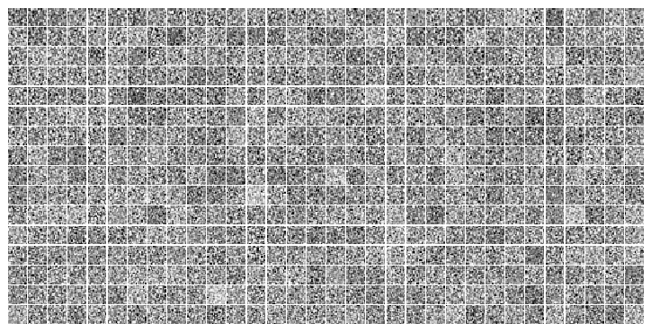
lamb = torch.tensor([1.0, 5.0, 10.0], device=device)
pois = Poisson(
log_rate=torch.log(lamb),
temp=0.5,
n_exp='infer',
)
pois.mean
tensor([ 1.0000, 5.0000, 10.0000], device='cuda:0')
pois.n_exp
21
samples = []
rsamples = []
for _ in tqdm(range(100000)):
samples.append(pois.sample())
rsamples.append(pois.rsample())
samples = torch.stack(samples).T
rsamples = torch.stack(rsamples).T
samples.shape, rsamples.shape
100%|████████████████████████████████| 100000/100000 [00:07<00:00, 13726.51it/s]
(torch.Size([3, 100000]), torch.Size([3, 100000]))
i = 2
bins = [
np.linspace(0, 10, 101) - 0.15,
np.linspace(0, 20, 201) - 0.15,
np.linspace(0, 30, 301) - 0.15,
]
fig, ax = create_figure(1, 1, (10, 5))
histplot(samples[i], color='k', label='true', bins=bins[i], stat='percent')
histplot(rsamples[i], color='tomato', label='rsample', bins=bins[i], stat='percent')
plt.legend()
plt.show()
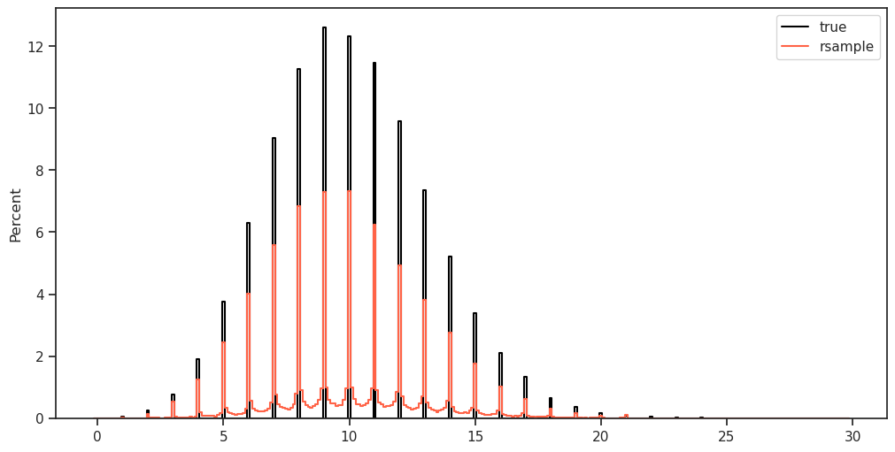
i = 2
bins = [
np.linspace(0, 10, 101) - 0.15,
np.linspace(0, 20, 201) - 0.15,
np.linspace(0, 30, 301) - 0.15,
]
fig, ax = create_figure(1, 1, (10, 5))
histplot(samples[i], color='k', label='true', bins=bins[i], stat='percent')
histplot(rsamples[i], color='tomato', label='rsample', bins=bins[i], stat='percent')
plt.legend()
plt.show()
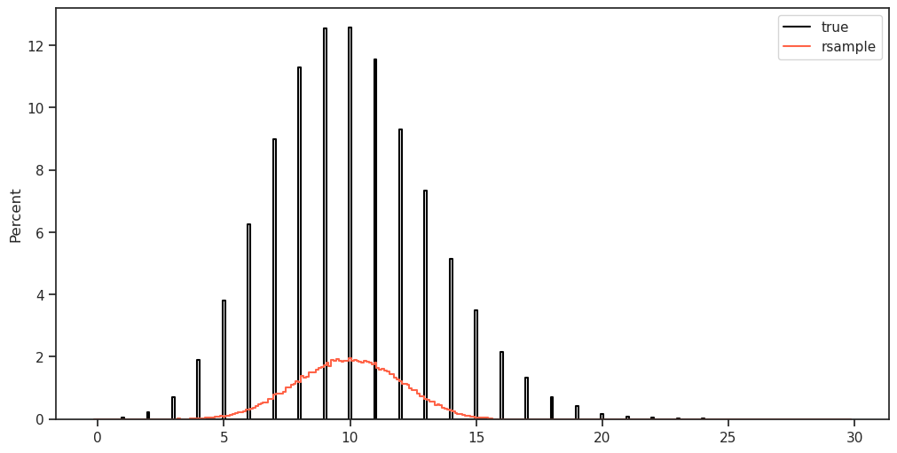
mod.cfg.clamp_du, mod.cfg.clamp_u
(7.0, 8.0)
print(f"{mod.cfg.name()}\n{tr.cfg.name()}_({mod.timestamp})\n")
vH16_t-16_z-[512]_<grad|lin> b200-ep300-lr(0.002)_beta(20:0.1)_temp(0.05:0.5)_gr(200)_(2025_02_14,23:58)
print(mod.cfg.sequences)
{0: range(0, 16)}
cm = f"reproduce-with-tbptt-option-disabled"
tr.train(fit_name=f"{cm}_{tr.cfg.name()}")
# tr.train()
epoch # 300, avg loss: 269.862115: 100%|████| 300/300 [3:19:42<00:00, 39.94s/it]
fig, axes = create_figure(1, 2)
axes[0].plot(list(tr.stats['loss'].values()), lw=0.8,)
axes[1].plot(list(tr.stats['grad'].values()), lw=0.8, color='pink');
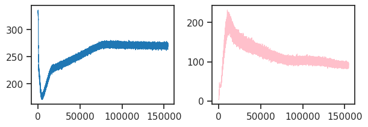
u_min = np.asarray(tr.model.stats['u_min'])
u_max = np.asarray(tr.model.stats['u_max'])
du_min = np.asarray(tr.model.stats['du_min'])
du_max = np.asarray(tr.model.stats['du_max'])
plt.plot(u_max);
plt.plot(du_max);
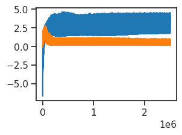
tr.model.cfg.clamp_u, tr.model.cfg.clamp_du
(8.0, 7.0)
u0 = tonp(tr.model.layer.u_init.squeeze())
tr.model.show(order=np.argsort(u0));
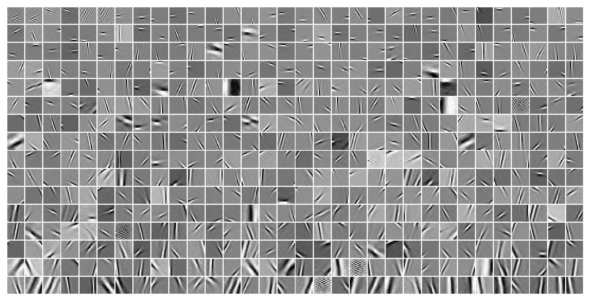
histplot(u0, color='dimgray');
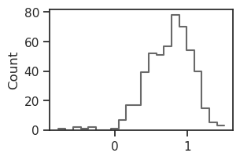
%%time
kws = dict(
seq_total=10000,
seq_batch_sz=1000,
n_data_batches=2,
)
results = tr.analysis('vld', **kws)
_ = plot_convergence(results, color='k')
100%|███████████████████████████████████| 2/2 [00:59<00:00, 29.65s/it]
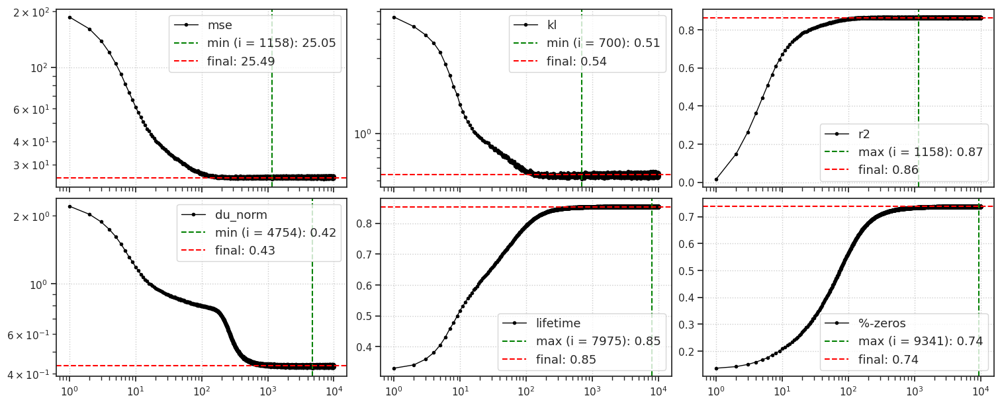
CPU times: user 1min 9s, sys: 5.93 s, total: 1min 15s
Wall time: 1min 15s
output = tr.model.xtract_ftr(
feeder=tr.get_feeder(),
seq=range(1000),
return_extras=True,
).stack()
print(list(output))
['loss_kl', 'loss_recon', 'posterior', 'du', 'u', 'v', 'recon', 'samples', 'conditional', 'mse', 'r2']
u_norm = tonp(torch.linalg.norm(output['u'], axis=-1).mean(0))
v_norm = tonp(torch.linalg.norm(output['v'], axis=-1).mean(0))
r_norm = tonp(torch.linalg.norm(torch.exp(output['u']), axis=-1).mean(0))
fig, axes = create_figure(1, 3)
axes[0].plot(u_norm, label='u', color='r')
axes[1].plot(v_norm, label='v', color='k')
axes[2].plot(r_norm, label='r')
add_legend(axes)
plt.show()
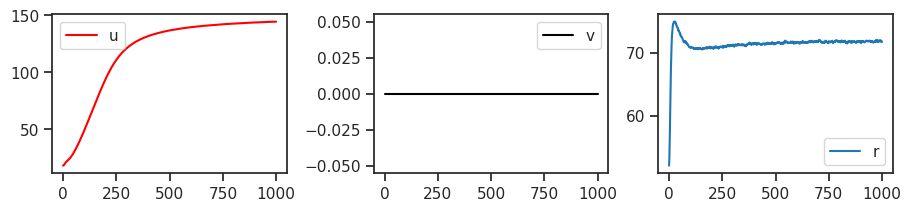
s = 'vH16_t-16_z-[512]_<grad|lin>/b200-ep300-lr(0.002)_beta(20:0.1)_temp(0.05:0.5)_gr(200)_(2025_02_13,09:32)'
tr, meta = load_model(s, False, device=device)
fig, axes = create_figure(1, 2)
axes[0].plot(list(tr.stats['loss'].keys()), list(tr.stats['loss'].values()), lw=0.8,)
axes[1].plot(list(tr.stats['grad'].keys()), list(tr.stats['grad'].values()), lw=0.8, color='pink');
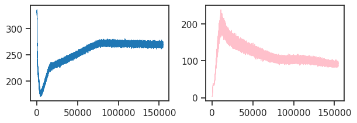